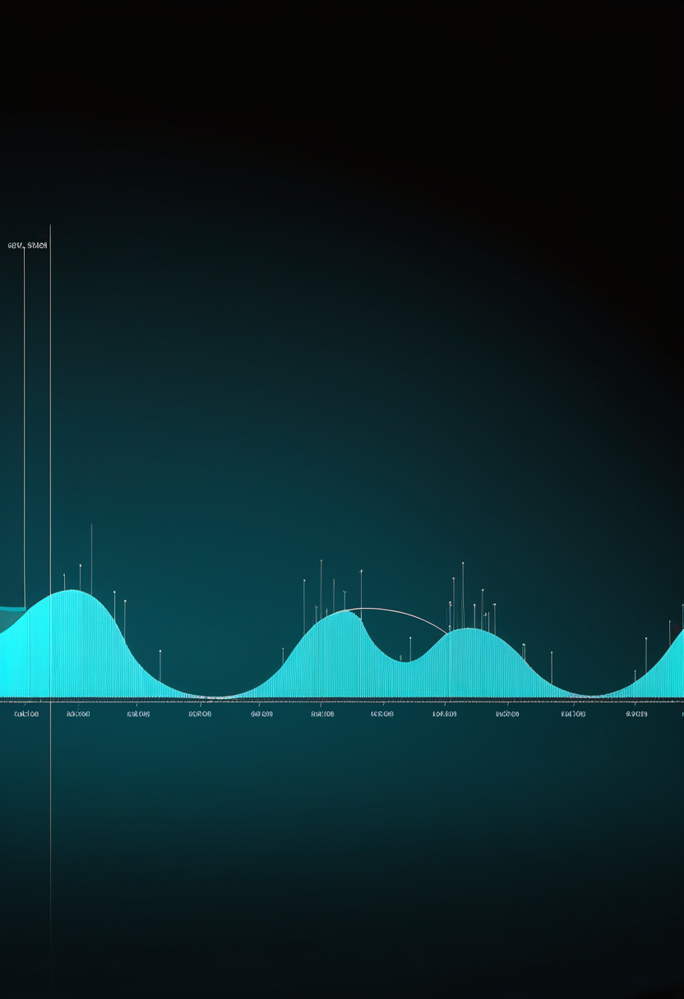
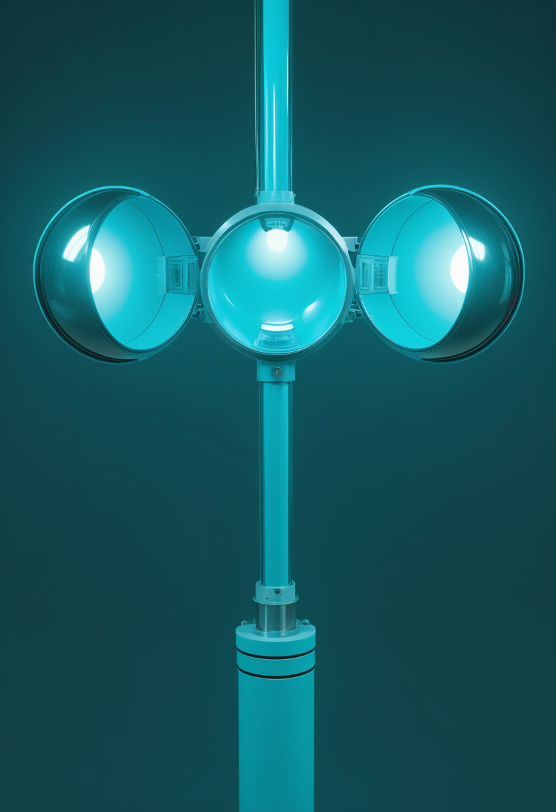

火曜日の便り。Africa CDCは、DRCエボラの新規例のうち約7割が既知の接触者リストに載っていない人から出ていると説明した。基盤の章ではこの『見えない伝播』の実態と、米ワシントン州の牛でのH5N1確認、東京・群馬のインフルエンザ注意報を届ける。自由の章ではSynchronの恒久埋め込み型BCI検証試験計画、Tobii Dynavoxの長期利用データ、中国BCIの承認状況を。畏敬の章では北京の実験が示したグルーオンだけの粒子『グルーボール』、死んだ星の灰から生まれたかもしれない惑星候補、網膜の遺伝子治療とがんの臨床試験を。命の章ではアピテグロマブの欧州再提出と骨折リスクの安全性データ、英国の新生児スクリーニングの拡大計画を。美の章では脳データを守る米国の州法と、少ないデータで脳の『見ているもの』を読み出す新手法を取り上げる。
Africa CDCは、DRCの新規例のうち約70%が既知の接触者リストに載っていない人から出ており、死亡の約60%が医療機関の外(地域)で起きていると説明した。WHOの10月8日付発生情報では確定8,728例・死亡4,205人(10月6日時点、致命率48.2%)、ECDCは全167保健区域のうち64区域・7州が影響を受けたとする。これまでの数日は『件数が横ばいか減っているか』が焦点だったが、今日の変化はその数字そのものより「監視網が伝播の大半を捉えられていない」という構造的な問題にある。新規例はウガンダと国境を接するイトゥリ州・北キブ州に集中し、ケニアの輸入例(10月6日確定)の接触者からは今のところ二次感染は確認されていない。詳細は基盤の章で。
Scholar Rockは10月8日、筋肉を標的とするSMA治療薬アピテグロマブ(米国名ISEMBYLD)の欧州販売承認申請をEMAに再提出したと発表した。8月の撤回理由は委託先工場(米Catalent Indiana、現ノボ ノルディスク傘下)のGMP不適合だったため、今回は米国の別施設を用いて申請し直した。CHMPの意見は2027年前半を見込むとしているが、これは会社側の見通しでEMAが示した日程ではない。承認済みは依然米国のみ。
9月11日にFDAが承認したアピテグロマブは、SMN2標的治療を受けている2歳以上を対象にした筋肉標的の初のSMA治療薬。第3相SAPPHIRE試験(188人)では、2〜12歳の10mg/kg投与群で52週時点の運動機能(HFMSE)がプラセボ比2.2点改善した一方、同群の骨折は9%(プラセボ2%)に上り、FDAは重い骨折を含む骨折リスクの増加を重要な安全性情報として明示した。効果と骨の安全性のトレードオフが、承認後の追跡課題として残る。
NHSは、かかとから採血する新生児スクリーニングにSMAを加える評価運用を10月に開始した。機器を備えたバーミンガムを皮切りに、マンチェスター・南西テムズ・南東テムズ・グレート・オーモンド・ストリート病院・シェフィールドの7検査機関が稼働し、新生児の約72%をカバーする。残る6機関(ブリストル・ケンブリッジ・リーズ・リバプール・オックスフォード・ポーツマス)は2027年10月から加わる計画で、当初想定していた2027年1月より前倒しとなった。
アピテグロマブは承認地図が広がる手前で足踏みし、代わりに安全性データと検査体制の実装細部が明らかになってきた一日。薬が効くかどうかより、どこで作り、どこで見つけるかが今の論点になっている。
血管を通して留置する恒久埋め込み型BCI「Stentrode」を手がけるSynchronは、米FDAの治験機器例外(IDE)と画期的機器指定を得ており、COMMAND可行性試験では主要安全性評価項目を達成している。2025年11月に発表した2億ドルのシリーズDは2026年の検証(pivotal)試験と商用化準備に充てられ、6月の業界報道は年内にFDAへ検証試験を申請する計画と伝えた。ただし同報道にある「100人に留置済み」はCOMMAND試験の6〜12人という報道と整合せず要確認で、恒久埋め込み型BCIで米国の市販前承認(PMA)を得た製品は現時点でまだない。
Tobii Dynavoxの支援コミュニケーションアプリMyTDは10月6日から、意思伝達アプリTD Snapの利用レポートを最大18か月分に広げた。支援者や家族が本人の使い方の長期的な変化を追いやすくなる機能強化で、親会社Tobiiは10月22日に2026年第3四半期決算を公表し、CEOファディ・ファラオン氏らが説明する予定。
中国のBCI臨床研究を整理したarXiv論文(2026年6月時点)によると、規制当局の承認を得たBCI関連製品はNeuracleの「NEO」を含め5つにとどまる。登録研究全体では79.1%が非侵襲型で占められ、適応は脳卒中リハビリが65.0%と最多。商用承認の数自体はまだ少ないが、裾野となる研究の大半は非侵襲型に広がっている。
埋め込み型は承認への最終コーナーに資金で近づき、支援技術は『どれだけ長く記録を残せるか』に軸が移り、裾野の研究は非侵襲型が静かに広がっている。
Africa CDCは、DRCの新規例のうち約70%が既知の接触者リストに載っていない人から出ており、死亡の約60%が医療機関ではなく地域で起きていると説明した。WHOの10月8日付発生情報では確定8,728例・死亡4,205人(10月6日時点、致命率48.2%)、ECDCは全167保健区域のうち7州64区域が影響を受けたとする。直近の新規例はウガンダと国境を接するイトゥリ州・北キブ州に集中。ケニアの輸入例(10月6日確定)をめぐる接触者からは、今のところ二次感染は確認されていない。
米農務省(USDA)は10月8日、ワシントン州の乳牛2群で高病原性鳥インフルエンザ(H5N1)への感染を確認したと公表した。WHO西太平洋事務局は、ヒトからヒトへは現時点で容易に広がらないとの評価を維持している。乳牛での確認は家畜監視網の継続的な課題であり続けている。

東京都感染症情報センターの第40週(9月28日〜10月4日)速報では、定点当たり報告数が15.87となり注意報レベルが続いている。群馬県も同週の県内定点を受けて注意報を発令した(いずれも速報値、確定値は厚労省・JIHSの週報で要確認)。全国値(札幌市集計、第40週11.35)よりも東京都の値が高く、異例に早い流行入りが地域差を伴って続いている。
DRCは件数の横ばいの裏で『見えない伝播』が主流になり、国内の季節外れの流行は地域ごとに強弱を見せ始めている。監視網の外側で何が起きているかが、どちらの話題でも焦点になった。
中国・北京のBEPCII加速器で動くBESIII実験は、X(2370)という共鳴の主成分が、グルーオンだけで構成される長年予想されてきた粒子グルーボールである証拠を得たと報告した。CERN Courierの2026年9/10月号がこの結果を取り上げている。CERN側では8月、LHCの4つの主要実験が酸素やネオンという小さな原子核の衝突でもクォーク・グルーオンプラズマの兆候を揃って報告し、ALICEは酸素・酸素衝突でのパートンのエネルギー損失を確認した。9月下旬にはLHCの取り外し作業が始まったと報じられている。
約270光年先の白色矮星HS 0209+0832の大気で、ニオブ・亜鉛・銅が太陽の1,000倍超に濃縮していることが分かった。TESSのデータには4.4日周期の信号があり、木星サイズのガス惑星と矛盾しない。恒星が死ぬ際に放出した物質から生まれた「第2世代惑星」だと確認されれば初の例となるが、現時点ではまだ候補の段階(Nature Astronomy)。
NEJMの10月8日号に、末期の網膜色素変性症に対するGenSight社の光遺伝学的遺伝子治療GS030の第1/2相結果が掲載された。主要評価項目は安全性で、視機能の指標は探索的・暫定的な位置づけにとどまる。光を感じる仕組み自体を別の光感受性タンパク質で作り直す治療法の、まだ初期段階のデータ。

The Lancetの10月10日号(第408巻10563号)に、WHO grade 2の非典型髄膜腫を摘出した後、放射線治療と経過観察のみを比べる第3相ROAM/EORTC-1308試験が掲載された。摘出後にどこまで追加治療が必要かという、脳腫瘍治療で長く議論されてきた問いに対する大規模な比較データで、詳細な結果は原論文で要確認。
遠い宇宙の素粒子、死んだ星の灰からの惑星候補、視力と脳をめぐる臨床試験。スケールは違っても『まだ確定ではない』発見が並んだ一日だった。
脳波などの神経データを個人情報として保護する州法が米国で広がっている。コロラド州とカリフォルニア州は消費者プライバシー法の改正で、モンタナ州は既存の遺伝情報プライバシー法を拡張する形で対応し、モンタナの規定は10月に施行予定とされる(施行日は要確認)。連邦ではFTCに神経データ規制の検討を命じるMIND Act of 2025が2025年9月に提出されたが成立は確認できず、現状はFTC法第5条による一般的な規律にとどまる。Neurorights Foundationの2024年調査では、オンラインで買える神経技術製品を持つ30社のうち29社が脳データにアクセスでき、その利用に実質的な制限を設けていなかった。
イスラエル・ワイツマン研究所(ミハル・イラニ研究室)のBrain-ITは、機能が似た脳部位のまとまりを複数の被験者で共有するTransformerを使い、fMRIから視覚像を再構成する。新しい被験者でもfMRI約1時間のデータで、40時間分を使う従来手法に匹敵する結果が出るとされる。実験室で見せた画像に限った成果で、誤り(浴槽の犬がヤギになる等)も残る。
故人の発話データをAIで再現するグリーフボットについて、査読誌の分析は、こうしたサービスが『もう別れを言わなくてよい』という形で悲嘆を枠付け、何を正常な悲嘆とみなすかを書き換えていると指摘する。ケンブリッジ大の研究者は、停止に課金するサブスクリプションや故人アバターによる広告・商品推奨といった事業モデルの危険を挙げ、強い情緒的結びつきが操作されやすさにつながると警告した。利用を長期悲嘆症(PGD)の診断がある人に限るべきだという案も出ている。
神経データは『誰が見られるか』、グリーフボットは『誰が儲けるか』が問われている。技術より先に、制度と倫理の議論が動く領域。
火曜日の便り。Africa CDCは、DRCエボラの新規例のうち約7割が既知の接触者リストに載っていない人から出ていると説明し、監視網が伝播の大半を捉えられていない実態が浮かんだ。基盤の章ではこれに加え、米ワシントン州の牛でのH5N1確認と、東京・群馬のインフルエンザ注意報を届けた。自由の章では、Synchronの恒久埋め込み型BCI検証試験計画、Tobii Dynavoxの長期利用データ、中国BCIの承認状況を伝えた。畏敬の章では、北京の実験が示したグルーオンだけの粒子『グルーボール』、死んだ星の灰から生まれたかもしれない惑星候補、網膜の遺伝子治療と髄膜腫の臨床試験を取り上げた。命の章では、アピテグロマブの欧州再提出と骨折リスクの安全性データ、英国の新生児スクリーニングの拡大計画を届けた。美の章では、脳データを守る米国の州法と、少ないデータで脳の『見ているもの』を読み出す新手法、グリーフボットの事業モデルへの警鐘を伝えた。
では、また明日の朝に。 — JaH